Introduction to Decision Panel Optimization
meddecide Development Team
2025-06-09
Source:vignettes/decisionpanel_optimisation.Rmd
decisionpanel_optimisation.RmdIntroduction
The Decision Panel Optimization module in the meddecide
package provides a comprehensive framework for optimizing diagnostic
test combinations in medical decision-making. This vignette introduces
the basic concepts and demonstrates core functionality.
Key Concepts
Testing Strategies
When multiple diagnostic tests are available, they can be combined in different ways:
- Single Testing: Use individual tests independently
-
Parallel Testing: Perform multiple tests
simultaneously
- ANY rule (OR): Positive if any test is positive
- ALL rule (AND): Positive only if all tests are positive
- MAJORITY rule: Positive if majority of tests are positive
-
Sequential Testing: Perform tests in sequence based
on previous results
- Stop on first positive
- Confirmatory (require multiple positives)
- Exclusion (require multiple negatives)
Optimization Criteria
The module can optimize test panels based on various criteria:
- Accuracy: Overall correct classification rate
- Sensitivity: Ability to detect disease (minimize false negatives)
- Specificity: Ability to rule out disease (minimize false positives)
- Predictive Values: PPV and NPV
- Cost-Effectiveness: Balance performance with resource utilization
- Utility: Custom utility functions incorporating costs of errors
Installation and Loading
# Install meddecide package
install.packages("meddecide")
# Or install from GitHub
devtools::install_github("ClinicoPath/meddecide")
# Load required packages
library(meddecide)
#> Warning: replacing previous import 'jmvcore::select' by 'dplyr::select' when
#> loading 'meddecide'
library(dplyr)
#>
#> Attaching package: 'dplyr'
#> The following objects are masked from 'package:stats':
#>
#> filter, lag
#> The following objects are masked from 'package:base':
#>
#> intersect, setdiff, setequal, union
library(ggplot2)
#> Warning: package 'ggplot2' was built under R version 4.3.3
library(rpart)
#> Warning: package 'rpart' was built under R version 4.3.3
library(rpart.plot)
library(knitr)
#> Warning: package 'knitr' was built under R version 4.3.3
library(forcats)Basic Example: COVID-19 Screening
Let’s start with a simple example using COVID-19 screening data:
# Examine the data structure
str(covid_screening_data)
#> 'data.frame': 1000 obs. of 8 variables:
#> $ patient_id : int 1 2 3 4 5 6 7 8 9 10 ...
#> $ rapid_antigen: Factor w/ 2 levels "Negative","Positive": 1 2 1 1 1 1 1 1 1 1 ...
#> $ pcr : Factor w/ 2 levels "Negative","Positive": 1 2 NA NA 1 1 NA 1 1 NA ...
#> $ chest_ct : Factor w/ 2 levels "Normal","Abnormal": 2 1 1 1 1 1 1 1 1 1 ...
#> $ symptom_score: num 8 6 1 1 5 5 5 4 2 5 ...
#> $ covid_status : Factor w/ 2 levels "Negative","Positive": 2 2 1 1 1 1 1 1 1 1 ...
#> $ age : num 35 33 39 28 62 32 64 23 58 36 ...
#> $ risk_group : Factor w/ 3 levels "High","Low","Medium": 2 2 2 2 2 3 3 3 2 2 ...
# Check disease prevalence
table(covid_screening_data$covid_status)
#>
#> Negative Positive
#> 851 149
prop.table(table(covid_screening_data$covid_status))
#>
#> Negative Positive
#> 0.851 0.149Running Basic Analysis
# Basic decision panel analysis
covid_panel <- decisionpanel(
data = covid_screening_data,
tests = c("rapid_antigen", "pcr", "chest_ct"),
testLevels = c("Positive", "Positive", "Abnormal"),
gold = "covid_status",
goldPositive = "Positive",
strategies = "all",
optimizationCriteria = "accuracy"
)Understanding Testing Strategies
Parallel Testing Example
# Simulate parallel testing with ANY rule
# Positive if rapid_antigen OR pcr is positive
parallel_any <- with(covid_screening_data,
rapid_antigen == "Positive" | pcr == "Positive"
)
# Create confusion matrix
conf_matrix_any <- table(
Predicted = parallel_any,
Actual = covid_screening_data$covid_status == "Positive"
)
print(conf_matrix_any)
#> Actual
#> Predicted FALSE TRUE
#> FALSE 573 1
#> TRUE 25 134
# Calculate metrics
sensitivity_any <- conf_matrix_any[2,2] / sum(conf_matrix_any[,2])
specificity_any <- conf_matrix_any[1,1] / sum(conf_matrix_any[,1])
cat("Parallel ANY Rule:\n")
#> Parallel ANY Rule:
cat(sprintf("Sensitivity: %.1f%%\n", sensitivity_any * 100))
#> Sensitivity: 99.3%
cat(sprintf("Specificity: %.1f%%\n", specificity_any * 100))
#> Specificity: 95.8%Sequential Testing Example
# Simulate sequential testing
# Start with rapid test, only do PCR if rapid is positive
sequential_result <- rep("Negative", nrow(covid_screening_data))
# Those with positive rapid test
rapid_pos_idx <- which(covid_screening_data$rapid_antigen == "Positive")
# Among those, check PCR
sequential_result[rapid_pos_idx] <-
ifelse(covid_screening_data$pcr[rapid_pos_idx] == "Positive",
"Positive", "Negative")
# Create confusion matrix
conf_matrix_seq <- table(
Predicted = sequential_result == "Positive",
Actual = covid_screening_data$covid_status == "Positive"
)
print(conf_matrix_seq)
#> Actual
#> Predicted FALSE TRUE
#> FALSE 851 51
#> TRUE 0 98
# Calculate metrics
sensitivity_seq <- conf_matrix_seq[2,2] / sum(conf_matrix_seq[,2])
specificity_seq <- conf_matrix_seq[1,1] / sum(conf_matrix_seq[,1])
cat("\nSequential Testing:\n")
#>
#> Sequential Testing:
cat(sprintf("Sensitivity: %.1f%%\n", sensitivity_seq * 100))
#> Sensitivity: 65.8%
cat(sprintf("Specificity: %.1f%%\n", specificity_seq * 100))
#> Specificity: 100.0%
# Calculate cost savings
pcr_tests_saved <- sum(covid_screening_data$rapid_antigen == "Negative")
cat(sprintf("PCR tests saved: %d (%.1f%%)\n",
pcr_tests_saved,
pcr_tests_saved/nrow(covid_screening_data) * 100))
#> PCR tests saved: 876 (87.6%)Cost-Effectiveness Analysis
When costs are considered, the optimal strategy may change:
# Analysis with costs
covid_panel_cost <- decisionpanel(
data = covid_screening_data,
tests = c("rapid_antigen", "pcr", "chest_ct"),
testLevels = c("Positive", "Positive", "Abnormal"),
gold = "covid_status",
goldPositive = "Positive",
strategies = "all",
optimizationCriteria = "utility",
useCosts = TRUE,
testCosts = "5,50,200", # Costs for each test
fpCost = 500, # Cost of false positive
fnCost = 5000 # Cost of false negative
)Visualization
Performance Comparison Plot
# Create performance comparison data
strategies <- data.frame(
Strategy = c("Rapid Only", "PCR Only", "Parallel ANY", "Sequential"),
Sensitivity = c(65, 95, 98, 62),
Specificity = c(98, 99, 97, 99.9),
Cost = c(5, 50, 55, 15)
)
# Plot sensitivity vs specificity
ggplot(strategies, aes(x = 100 - Specificity, y = Sensitivity)) +
geom_point(aes(size = Cost), alpha = 0.6) +
geom_text(aes(label = Strategy), vjust = -1) +
scale_size_continuous(range = c(3, 10)) +
xlim(0, 5) + ylim(60, 100) +
labs(
title = "Testing Strategy Comparison",
x = "False Positive Rate (%)",
y = "Sensitivity (%)",
size = "Cost ($)"
) +
theme_minimal()
Decision Trees
Decision trees provide clear algorithms for clinical use:
# Generate decision tree
covid_tree <- decisionpanel(
data = covid_screening_data,
tests = c("rapid_antigen", "pcr", "chest_ct", "symptom_score"),
testLevels = c("Positive", "Positive", "Abnormal", ">5"),
gold = "covid_status",
goldPositive = "Positive",
createTree = TRUE,
treeMethod = "cart",
maxDepth = 3
)Interpreting the Tree
A typical decision tree output might look like:
1. Start with Rapid Antigen Test
├─ If Positive (2% of patients)
│ └─ Confirm with PCR
│ ├─ If Positive → COVID Positive (PPV: 95%)
│ └─ If Negative → COVID Negative (NPV: 98%)
└─ If Negative (98% of patients)
├─ If Symptoms > 5
│ └─ Perform Chest CT
│ ├─ If Abnormal → Perform PCR
│ └─ If Normal → COVID Negative
└─ If Symptoms ≤ 5 → COVID NegativeAdvanced Features
Cross-Validation
Validate panel performance using k-fold cross-validation:
# Run with cross-validation
covid_panel_cv <- decisionpanel(
data = covid_screening_data,
tests = c("rapid_antigen", "pcr", "chest_ct"),
testLevels = c("Positive", "Positive", "Abnormal"),
gold = "covid_status",
goldPositive = "Positive",
crossValidate = TRUE,
nFolds = 5,
seed = 123
)Bootstrap Confidence Intervals
Get uncertainty estimates for performance metrics:
# Run with bootstrap
covid_panel_boot <- decisionpanel(
data = covid_screening_data,
tests = c("rapid_antigen", "pcr", "chest_ct"),
testLevels = c("Positive", "Positive", "Abnormal"),
gold = "covid_status",
goldPositive = "Positive",
bootstrap = TRUE,
bootReps = 1000,
seed = 123
)Best Practices
- Start Simple: Begin with individual test performance before combinations
- Consider Context: Screening vs. diagnosis requires different strategies
- Validate Results: Use cross-validation or separate test sets
- Include Costs: Real-world decisions must consider resources
- Think Sequentially: Often more efficient than parallel testing
- Set Constraints: Define minimum acceptable performance
- Interpret Clinically: Statistical optimality isn’t everything
Conclusion
The Decision Panel Optimization module provides a systematic approach to combining diagnostic tests. By considering various strategies, costs, and constraints, it helps identify practical testing algorithms that balance performance with resource utilization.
Next Steps
- See the “Clinical Applications” vignette for disease-specific examples
- Review “Advanced Optimization” for complex scenarios
- Check “Implementation Guide” for deploying algorithms in practice
Session Information
sessionInfo()
#> R version 4.3.2 (2023-10-31)
#> Platform: aarch64-apple-darwin20 (64-bit)
#> Running under: macOS 15.5
#>
#> Matrix products: default
#> BLAS: /Library/Frameworks/R.framework/Versions/4.3-arm64/Resources/lib/libRblas.0.dylib
#> LAPACK: /Library/Frameworks/R.framework/Versions/4.3-arm64/Resources/lib/libRlapack.dylib; LAPACK version 3.11.0
#>
#> locale:
#> [1] en_US.UTF-8/en_US.UTF-8/en_US.UTF-8/C/en_US.UTF-8/en_US.UTF-8
#>
#> time zone: Europe/Istanbul
#> tzcode source: internal
#>
#> attached base packages:
#> [1] stats graphics grDevices utils datasets methods base
#>
#> other attached packages:
#> [1] forcats_1.0.0 knitr_1.50 rpart.plot_3.1.2 rpart_4.1.24
#> [5] ggplot2_3.5.2 dplyr_1.1.4 meddecide_0.0.3.12
#>
#> loaded via a namespace (and not attached):
#> [1] gtable_0.3.6 xfun_0.52 bslib_0.9.0
#> [4] htmlwidgets_1.6.4 lattice_0.22-7 vctrs_0.6.5
#> [7] tools_4.3.2 generics_0.1.4 tibble_3.2.1
#> [10] proxy_0.4-27 pkgconfig_2.0.3 Matrix_1.6-1.1
#> [13] KernSmooth_2.23-26 checkmate_2.3.2 data.table_1.17.4
#> [16] irr_0.84.1 cutpointr_1.2.0 RColorBrewer_1.1-3
#> [19] desc_1.4.3 uuid_1.2-1 jmvcore_2.6.3
#> [22] lifecycle_1.0.4 flextable_0.9.9 stringr_1.5.1
#> [25] compiler_4.3.2 farver_2.1.2 textshaping_1.0.1
#> [28] codetools_0.2-20 fontquiver_0.2.1 fontLiberation_0.1.0
#> [31] htmltools_0.5.8.1 class_7.3-23 sass_0.4.10
#> [34] yaml_2.3.10 htmlTable_2.4.3 pillar_1.10.2
#> [37] pkgdown_2.1.3 jquerylib_0.1.4 MASS_7.3-60
#> [40] openssl_2.3.3 classInt_0.4-11 cachem_1.1.0
#> [43] BiasedUrn_2.0.12 iterators_1.0.14 boot_1.3-31
#> [46] foreach_1.5.2 fontBitstreamVera_0.1.1 zip_2.3.3
#> [49] tidyselect_1.2.1 digest_0.6.37 stringi_1.8.7
#> [52] sf_1.0-21 pander_0.6.6 purrr_1.0.4
#> [55] labeling_0.4.3 splines_4.3.2 fastmap_1.2.0
#> [58] grid_4.3.2 cli_3.6.5 magrittr_2.0.3
#> [61] survival_3.8-3 e1071_1.7-16 withr_3.0.2
#> [64] backports_1.5.0 gdtools_0.4.2 scales_1.4.0
#> [67] lubridate_1.9.4 timechange_0.3.0 rmarkdown_2.29
#> [70] officer_0.6.10 askpass_1.2.1 ragg_1.4.0
#> [73] zoo_1.8-14 lpSolve_5.6.23 evaluate_1.0.3
#> [76] epiR_2.0.84 rlang_1.1.6 Rcpp_1.0.14
#> [79] glue_1.8.0 DBI_1.2.3 xml2_1.3.8
#> [82] rstudioapi_0.17.1 jsonlite_2.0.0 R6_2.6.1
#> [85] systemfonts_1.2.3 fs_1.6.6 units_0.8-7